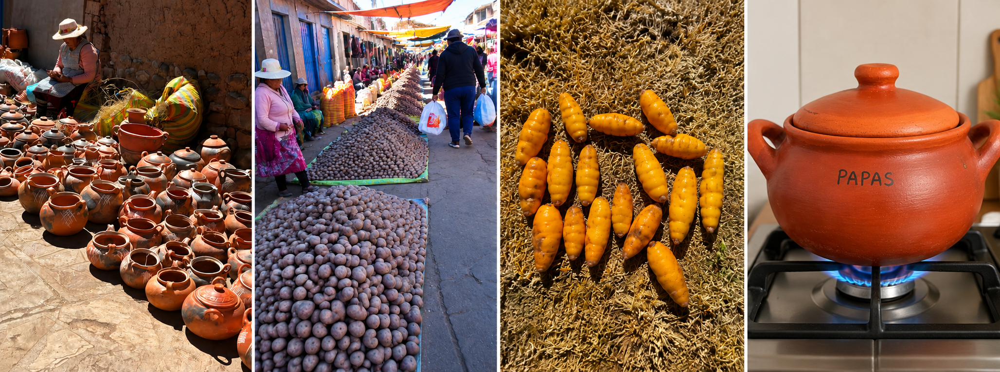

LABORATORY
FOODPOWER Laboratory
BioArCh · Department of Archaeology · University of York
FOODPOWER combines archaeological, bioarchaeological, experimental, and biomolecular approaches to investigate how foodways changed in the ancient Andes and how access to food became connected to social differentiation and political power.
01 · ARCHAEOLOGICAL MATERIALS
From archaeological context to laboratory analysis
Laboratory analyses begin with archaeological materials and their contexts. FOODPOWER examines human and animal remains, ceramic vessels, food remains, archaeological residues, and selected archaeological samples to investigate past food practices.
These materials provide the foundation for molecular and isotopic analyses, allowing laboratory evidence to be interpreted alongside archaeological context, chronology, material culture, and patterns of social organization. Most laboratory analyses will be conducted at BioArCh, Department of Archaeology, University of York, where archaeological materials will be investigated through stable isotope analysis, compound-specific isotope analysis, organic residue analysis, and proteomics. Selected samples will also be analyzed at collaborating laboratories according to the analytical requirements of the project.
BioArCh Virtual Laboratory Tour · Department of Archaeology, University of York.
02 · HUMAN AND ANIMAL DIETS
Reconstructing changing patterns of food consumption
Stable isotope analysis of human and animal remains provides evidence for dietary practices, subsistence strategies, and changing patterns of food consumption. FOODPOWER will analyse bone collagen from 70 individuals from five archaeological sites in the Titicaca Basin, measuring bulk δ¹³C and δ¹⁵N by EA-IRMS to estimate average diet and identify the main sources of dietary protein. These values will be compared with isotopic data from potential food resources, drawing on our own measurements and published values from the Titicaca Basin.
Compound-specific isotope analysis (CSIA) of amino acids provides an additional approach for investigating diet and trophic relationships, helping to address questions that may not be resolved through bulk isotope measurements alone. Based on the bulk results, approximately 45-50 individuals with contrasting isotopic values or archaeological significance will be selected for CSIA of bone collagen by GC-C-IRMS, enabling higher-resolution dietary reconstruction.
These approaches allow FOODPOWER to investigate differences in food consumption between individuals and groups and to examine how dietary practices changed through time.
03 · FOOD IN CERAMICS
Detecting molecular traces of food preparation in Ceramics
Organic residue analysis investigates molecular traces preserved in archaeological ceramics, providing evidence for the processing, preparation, and use of food.
Molecular residues can complement archaeological and macroscopic observations, helping to identify activities that may not be visible from vessel form or surface characteristics alone.
This approach allows FOODPOWER to ask what foods were processed and prepared in particular vessels, and whether patterns of food preparation varied between contexts.
Organic residue analysis in archaeology: a brief introduction by Dr. Oliver Craig. BioArCh, Department of Archaeology, University of York.
04 · PROTEINS AND ANIMAL PRODUCTS
Identifying food through molecular evidence
Proteomic approaches provide molecular evidence for the identification of animal products and other archaeological materials, complementing morphological and isotopic analyses.
Protein-based evidence can contribute to the identification of archaeological food resources and help investigate how animal products were incorporated into ancient foodways.
05 · EXPERIMENTAL ARCHAEOLOGY
Connecting experiments with archaeological evidence
Experimental archaeology provides a way to investigate how food processing and preparation may have affected archaeological materials and the molecular residues preserved within them.
Experiments were conducted in Puno using locally made earthenware pots purchased in the town of Pucara. Separate pots were used to cook potatoes, quinoa, oca, maize, alpaca meat, and fish from Lake Titicaca, creating reference samples for organic residue analysis.

Experimental cooking in Puno using locally made earthenware pots from Pucara.
In this way, experimental evidence provides an important bridge between laboratory measurements and the archaeological processes that produced them.
06 · INTEGRATING THE EVIDENCE
Multiple lines of evidence, one archaeological question
No single analytical approach can reconstruct ancient foodways on its own. FOODPOWER integrates archaeological context, material culture, human and animal remains, experimental evidence, stable isotopes, compound-specific isotope analysis, organic residues, and proteomics.
Together, these approaches provide complementary evidence for investigating how food was produced, prepared, consumed, and distributed, and how these practices became connected to social differentiation and political power.
LABORATORY RESEARCH AT BIOARCH
Archaeology provides the context. Molecular evidence helps reveal what happened within it.
Laboratory research for FOODPOWER will be conducted at BioArCh, Department of Archaeology, University of York, bringing together archaeological interpretation with biomolecular approaches to ancient diets, foodways, and human-environment interactions.